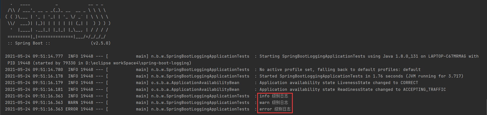
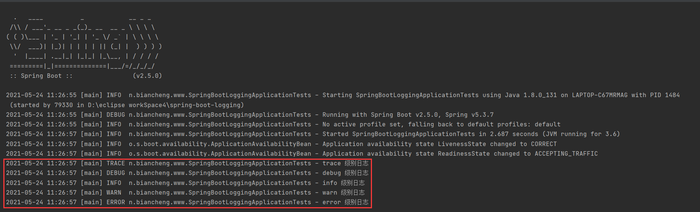
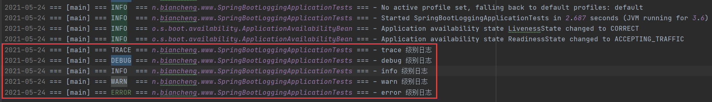
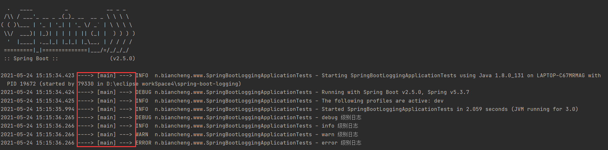
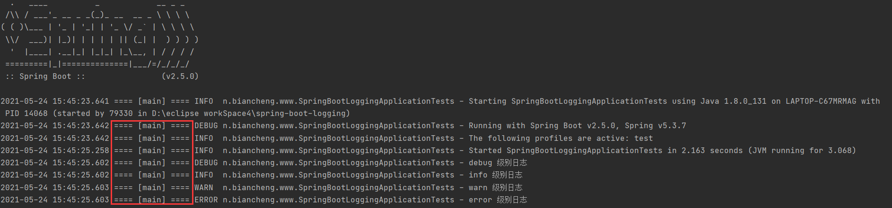

Spring Boot日志配置及输出
通过上节的学习，我们了解了 Spring Boot 日志框架的选用及统一，本节我们将重点介绍 Spring Boot 日志的配置及输出。
常见的日志配置包括日志级别、日志的输入出格式等内容。
常见的日志级别如下（优先级依次升高）。
1. 在 Spring Boot 中编写 Java 测试类，代码如下。
2. 执行该测试，控制台输出如下图。
通过控制台输出结果可知，Spring Boot 日志默认级别为 info，日志输出内容默认包含以下元素：
执行测试代码，执行结果如下。
从图 2 可以看到，控制台中日志的输出格式与 application.properties 中的 logging.pattern.console 配置一致。
查看本地日志文件 spring.log，该文件日志输出内容如下图。
从图 3 可以看到，本地日志文件中的日志输出格式与 application.properties 中 logging.pattern.file 配置一致。
Spring 官方提供了各个日志实现框架所需的配置文件，用户只要将指定的配置文件放置到项目的类路径下即可。
2. 启动该项目并启动测试程序，结果如下。
2. 配置内容修改前，日志输出格式配置如下。
3. 修改 logback-spring.xml 的配置内容，通过 Profile 功能实现在不同的环境中使用不同的日志输出格式，配置如下。
4. 在 Spring Boot 项目的 application.yml 中，激活开发环境（dev）的 Profile，配置内容如下。
5. 启动 Spring Boot 并执行测试代码，控制台输出如下。
7. 重启 Spring Boot 并执行测试代码，控制台输出如下。
默认配置
Spring Boot 默认使用 SLF4J+Logback 记录日志，并提供了默认配置，即使我们不进行任何额外配，也可以使用 SLF4J+Logback 进行日志输出。常见的日志配置包括日志级别、日志的输入出格式等内容。
日志级别
日志的输出都是分级别的，当一条日志信息的级别大于或等于配置文件的级别时，就对这条日志进行记录。常见的日志级别如下（优先级依次升高）。
| 序号 | 日志级别 | 说明 |
|---|---|---|
| 1 | trace | 追踪，指明程序运行轨迹。 |
| 2 | debug | 调试，实际应用中一般将其作为最低级别，而 trace 则很少使用。 |
| 3 | info | 输出重要的信息，使用较多。 |
| 4 | warn | 警告，使用较多。 |
| 5 | error | 错误信息，使用较多。 |
输出格式
我们可以通过以下常用日志参数对日志的输出格式进行修改，如下表。| 序号 | 输出格式 | 说明 |
|---|---|---|
| 1 | %d{yyyy-MM-dd HH:mm:ss, SSS} | 日志生产时间,输出到毫秒的时间 |
| 2 | %-5level | 输出日志级别，-5 表示左对齐并且固定输出 5 个字符，如果不足在右边补 0 |
| 3 | %logger 或 %c | logger 的名称 |
| 4 | %thread 或 %t | 输出当前线程名称 |
| 5 | %p | 日志输出格式 |
| 6 | %message 或 %msg 或 %m | 日志内容，即 logger.info("message") |
| 7 | %n | 换行符 |
| 8 | %class 或 %C | 输出 Java 类名 |
| 9 | %file 或 %F | 输出文件名 |
| 10 | %L | 输出错误行号 |
| 11 | %method 或 %M | 输出方法名 |
| 12 | %l | 输出语句所在的行数, 包括类名、方法名、文件名、行数 |
| 13 | hostName | 本地机器名 |
| 14 | hostAddress | 本地 ip 地址 |
示例 1
下面我们通过一个实例，来查看 Spring Boot 提供了哪些默认日志配置。1. 在 Spring Boot 中编写 Java 测试类，代码如下。
package net.biancheng.www;
import org.junit.jupiter.api.Test;
import org.slf4j.Logger;
import org.slf4j.LoggerFactory;
import org.springframework.boot.test.context.SpringBootTest;
@SpringBootTest
class SpringbootLoggingApplicationTests {
Logger logger = LoggerFactory.getLogger(getClass());
/**
* 测试日志输出
* SLF4J 日志级别从小到大trace>debug>info>warn>error
*/
@Test
void logTest() {
//日志级别 由低到高
logger.trace("trace 级别日志");
logger.debug("debug 级别日志");
logger.info("info 级别日志");
logger.warn("warn 级别日志");
logger.error("error 级别日志");
}
}
2. 执行该测试，控制台输出如下图。

图1：Spring Boot 日志级别
图1：Spring Boot 日志级别
通过控制台输出结果可知，Spring Boot 日志默认级别为 info，日志输出内容默认包含以下元素：
- 时间日期
- 日志级别
- 进程 ID
- 分隔符：---
- 线程名：方括号括起来（可能会截断控制台输出）
- Logger 名称
- 日志内容
修改默认日志配置
我们可以根据自身的需求，通过全局配置文件（application.properties/yml）修改 Spring Boot 日志级别和显示格式等默认配置。
在 application.properties 中，修改 Spring Boot 日志的默认配置，代码如下。
#日志级别
logging.level.net.biancheng.www=trace
#使用相对路径的方式设置日志输出的位置（项目根目录目录\my-log\mylog\spring.log）
#logging.file.path=my-log/myLog
#绝对路径方式将日志文件输出到 【项目所在磁盘根目录\springboot\logging\my\spring.log】
logging.file.path=/spring-boot/logging
#控制台日志输出格式
logging.pattern.console=%d{yyyy-MM-dd hh:mm:ss} [%thread] %-5level %logger{50} - %msg%n
#日志文件输出格式
logging.pattern.file=%d{yyyy-MM-dd} === [%thread] === %-5level === %logger{50} === - %msg%n
执行测试代码，执行结果如下。

图2：Spring Boot 日志修改默认配置
图2：Spring Boot 日志修改默认配置
从图 2 可以看到，控制台中日志的输出格式与 application.properties 中的 logging.pattern.console 配置一致。
查看本地日志文件 spring.log，该文件日志输出内容如下图。

图3：本地日志文件 spring.log
图3：本地日志文件 spring.log
从图 3 可以看到，本地日志文件中的日志输出格式与 application.properties 中 logging.pattern.file 配置一致。
自定义日志配置
在 Spring Boot 的配置文件 application.porperties/yml 中，可以对日志的一些默认配置进行修改，但这种方式只能修改个别的日志配置，想要修改更多的配置或者使用更高级的功能，则需要通过日志实现框架自己的配置文件进行配置。Spring 官方提供了各个日志实现框架所需的配置文件，用户只要将指定的配置文件放置到项目的类路径下即可。
| 日志框架 | 配置文件 |
|---|---|
| Logback | logback-spring.xml、logback-spring.groovy、logback.xml、logback.groovy |
| Log4j2 | log4j2-spring.xml、log4j2.xml |
| JUL (Java Util Logging) | logging.properties |
从上表可以看出，日志框架的配置文件基本上被分为 2 类：
- 普通日志配置文件，即不带 srping 标识的配置文件，例如 logback.xml；
- 带有 spring 表示的日志配置文件，例如 logback-spring.xml。
这两种日志配置文件在使用时大不相同，下面我们就对它们分别进行介绍。
普通日志配置文件
我们将 logback.xml、log4j2.xml 等不带 spring 标识的普通日志配置文件，放在项目的类路径下后，这些配置文件会跳过 Spring Boot，直接被日志框架加载。通过这些配置文件，我们就可以达到自定义日志配置的目的。
示例
1. 将 logback.xml 加入到 Spring Boot 项目的类路径下（resources 目录下），该配置文件配置内容如下。
<?xml version="1.0" encoding="UTF-8"?>
<!--
scan：当此属性设置为true时，配置文件如果发生改变，将会被重新加载，默认值为true。
scanPeriod：设置监测配置文件是否有修改的时间间隔，如果没有给出时间单位，默认单位是毫秒当scan为true时，此属性生效。默认的时间间隔为1分钟。
debug：当此属性设置为true时，将打印出logback内部日志信息，实时查看logback运行状态。默认值为false。
-->
<configuration scan="false" scanPeriod="60 seconds" debug="false">
<!-- 定义日志的根目录 -->
<property name="LOG_HOME" value="/app/log"/>
<!-- 定义日志文件名称 -->
<property name="appName" value="bianchengbang-spring-boot-logging"></property>
<!-- ch.qos.logback.core.ConsoleAppender 表示控制台输出 -->
<appender name="stdout" class="ch.qos.logback.core.ConsoleAppender">
<!--
日志输出格式：
%d表示日期时间，
%thread表示线程名，
%-5level：级别从左显示5个字符宽度
%logger{50} 表示logger名字最长50个字符，否则按照句点分割。
%msg：日志消息，
%n是换行符
-->
<layout class="ch.qos.logback.classic.PatternLayout">
<pattern>%d{yyyy-MM-dd HH:mm:ss} [%thread]**************** %-5level %logger{50} - %msg%n</pattern>
</layout>
</appender>
<!-- 滚动记录文件，先将日志记录到指定文件，当符合某个条件时，将日志记录到其他文件 -->
<appender name="appLogAppender" class="ch.qos.logback.core.rolling.RollingFileAppender">
<!-- 指定日志文件的名称 -->
<file>${LOG_HOME}/${appName}.log</file>
<!--
当发生滚动时，决定 RollingFileAppender 的行为，涉及文件移动和重命名
TimeBasedRollingPolicy： 最常用的滚动策略，它根据时间来制定滚动策略，既负责滚动也负责出发滚动。
-->
<rollingPolicy class="ch.qos.logback.core.rolling.TimeBasedRollingPolicy">
<!--
滚动时产生的文件的存放位置及文件名称 %d{yyyy-MM-dd}：按天进行日志滚动
%i：当文件大小超过maxFileSize时，按照i进行文件滚动
-->
<fileNamePattern>${LOG_HOME}/${appName}-%d{yyyy-MM-dd}-%i.log</fileNamePattern>
<!--
可选节点，控制保留的归档文件的最大数量，超出数量就删除旧文件。假设设置每天滚动，
且maxHistory是365，则只保存最近365天的文件，删除之前的旧文件。注意，删除旧文件是，
那些为了归档而创建的目录也会被删除。
-->
<MaxHistory>365</MaxHistory>
<!--
当日志文件超过maxFileSize指定的大小是，根据上面提到的%i进行日志文件滚动 注意此处配置SizeBasedTriggeringPolicy是无法实现按文件大小进行滚动的，必须配置timeBasedFileNamingAndTriggeringPolicy
-->
<timeBasedFileNamingAndTriggeringPolicy class="ch.qos.logback.core.rolling.SizeAndTimeBasedFNATP">
<maxFileSize>100MB</maxFileSize>
</timeBasedFileNamingAndTriggeringPolicy>
</rollingPolicy>
<!-- 日志输出格式： -->
<layout class="ch.qos.logback.classic.PatternLayout">
<pattern>%d{yyyy-MM-dd HH:mm:ss} [ %thread ] ------------------ [ %-5level ] [ %logger{50} : %line ] -
%msg%n
</pattern>
</layout>
</appender>
<!--
logger主要用于存放日志对象，也可以定义日志类型、级别
name：表示匹配的logger类型前缀，也就是包的前半部分
level：要记录的日志级别，包括 TRACE < DEBUG < INFO < WARN < ERROR
additivity：作用在于children-logger是否使用 rootLogger配置的appender进行输出，
false：表示只用当前logger的appender-ref，true：
表示当前logger的appender-ref和rootLogger的appender-ref都有效
-->
<!-- hibernate logger -->
<logger name="net.biancheng.www" level="debug"/>
<!-- Spring framework logger -->
<logger name="org.springframework" level="debug" additivity="false"></logger>
<!--
root与logger是父子关系，没有特别定义则默认为root，任何一个类只会和一个logger对应，
要么是定义的logger，要么是root，判断的关键在于找到这个logger，然后判断这个logger的appender和level。
-->
<root level="info">
<appender-ref ref="stdout"/>
<appender-ref ref="appLogAppender"/>
</root>
</configuration>
2. 启动该项目并启动测试程序，结果如下。
. ____ _ __ _ _ /\\ / ___'_ __ _ _(_)_ __ __ _ \ \ \ \ ( ( )\___ | '_ | '_| | '_ \/ _` | \ \ \ \ \\/ ___)| |_)| | | | | || (_| | ) ) ) ) ' |____| .__|_| |_|_| |_\__, | / / / / =========|_|==============|___/=/_/_/_/ :: Spring Boot :: (v2.5.0) 2021-05-24 14:51:11 [main]**************** INFO n.biancheng.www.SpringBootLoggingApplicationTests - Starting SpringBootLoggingApplicationTests using Java 1.8.0_131 on LAPTOP-C67MRMAG with PID 20080 (started by 79330 in D:\eclipse workSpace4\spring-boot-logging) 2021-05-24 14:51:11 [main]**************** DEBUG n.biancheng.www.SpringBootLoggingApplicationTests - Running with Spring Boot v2.5.0, Spring v5.3.7 2021-05-24 14:51:11 [main]**************** INFO n.biancheng.www.SpringBootLoggingApplicationTests - The following profiles are active: dev 2021-05-24 14:51:13 [main]**************** INFO n.biancheng.www.SpringBootLoggingApplicationTests - Started SpringBootLoggingApplicationTests in 2.058 seconds (JVM running for 3.217) 2021-05-24 14:51:13 [main]**************** DEBUG n.biancheng.www.SpringBootLoggingApplicationTests - debug 级别日志 2021-05-24 14:51:13 [main]**************** INFO n.biancheng.www.SpringBootLoggingApplicationTests - info 级别日志 2021-05-24 14:51:13 [main]**************** WARN n.biancheng.www.SpringBootLoggingApplicationTests - warn 级别日志 2021-05-24 14:51:13 [main]**************** ERROR n.biancheng.www.SpringBootLoggingApplicationTests - error 级别日志
带有 spring 标识的日志配置文件
Spring Boot 推荐用户使用 logback-spring.xml、log4j2-spring.xml 等这种带有 spring 标识的配置文件。这种配置文件被放在项目类路径后，不会直接被日志框架加载，而是由 Spring Boot 对它们进行解析，这样就可以使用 Spring Boot 的高级功能 Profile，实现在不同的环境中使用不同的日志配置。示例
1. 将 logback.xml 文件名修改为 logback-spring.xml，并将配置文件中日志输出格式的配置修改为使用 Profile 功能的配置。2. 配置内容修改前，日志输出格式配置如下。
<configuration scan="false" scanPeriod="60 seconds" debug="false">
......
<appender name="stdout" class="ch.qos.logback.core.ConsoleAppender">
<layout class="ch.qos.logback.classic.PatternLayout">
<pattern>%d{yyyy-MM-dd HH:mm:ss} [%thread]**************** %-5level %logger{50} - %msg%n</pattern>
</layout>
</appender>
......
</configuration>
3. 修改 logback-spring.xml 的配置内容，通过 Profile 功能实现在不同的环境中使用不同的日志输出格式，配置如下。
<configuration scan="false" scanPeriod="60 seconds" debug="false">
......
<appender name="stdout" class="ch.qos.logback.core.ConsoleAppender">
<layout class="ch.qos.logback.classic.PatternLayout">
<!--开发环境 日志输出格式-->
<springProfile name="dev">
<pattern>%d{yyyy-MM-dd HH:mm:ss.SSS} ----> [%thread] ---> %-5level %logger{50} - %msg%n</pattern>
</springProfile>
<!--非开发环境 日志输出格式-->
<springProfile name="!dev">
<pattern>%d{yyyy-MM-dd HH:mm:ss.SSS} ==== [%thread] ==== %-5level %logger{50} - %msg%n</pattern>
</springProfile>
</layout>
</appender>
......
</configuration>
4. 在 Spring Boot 项目的 application.yml 中，激活开发环境（dev）的 Profile，配置内容如下。
#默认配置
server:
port: 8080
#切换配置
spring:
profiles:
active: dev
---
#开发环境
server:
port: 8081
spring:
config:
activate:
on-profile: dev
---
#测试环境
server:
port: 8082
spring:
config:
activate:
on-profile: test
---
#生产环境
server:
port: 8083
spring:
config:
activate:
on-profile: prod
5. 启动 Spring Boot 并执行测试代码，控制台输出如下。

图4：dev 环境日志输出结果
图4：dev 环境日志输出结果
6. 修改 appplication.yml 中的配置，激活测试环境（test）的 Profile，配置如下。
#默认配置
server:
port: 8080
#切换配置
spring:
profiles:
active: test
---
#开发环境
server:
port: 8081
spring:
config:
activate:
on-profile: dev
---
#测试环境
server:
port: 8082
spring:
config:
activate:
on-profile: test
---
#生产环境
server:
port: 8083
spring:
config:
activate:
on-profile: prod
7. 重启 Spring Boot 并执行测试代码，控制台输出如下。

图5：test 环境日志输出结果
图5：test 环境日志输出结果
关注公众号「站长严长生」，在手机上阅读所有教程，随时随地都能学习。内含一款搜索神器，免费下载全网书籍和视频。

微信扫码关注公众号